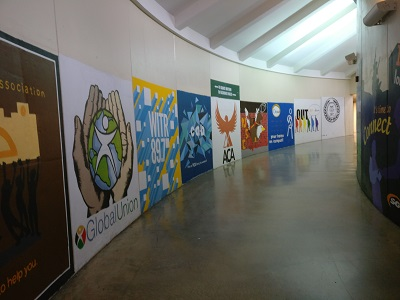

Dorm Tunnels
The dorm tunnels connect all of the various dorm buildings together. This means that you can travel from your dorm room to 2 dining areas, 2 convenience stores, or your friend's place without going outside.
The dorm tunnels are also nicely decorated with various murals made by various organizations on campus. This makes them much nicer to look at than the academic tunnels.
There seems to often be confusion about the path to Dining Commons. This is somewhat understandable, as unlike traveling from dorm to dorm, getting to Commons isn't as straightforward.
The path is as follows:
- From Sol's Underground, continue down the tunnel leading to Ellingston.
- Eventually, there will be a well-lit hallway to the left. A large mural by the School of Art and Animation adorns this hall. If you reach Ellingston or LBJ, you've gone too far. Turn left down this hall.
- Turn right at the end of this hallway. At the end of this next tunnel, turn left.
- To your left in this hall is a flight of stairs, and to the right an elevator. Either take the stairs up twice or the elevator to the 2nd floor. Welcome to Dining Commons!
To go the other way, simply follow these directions in reverse.